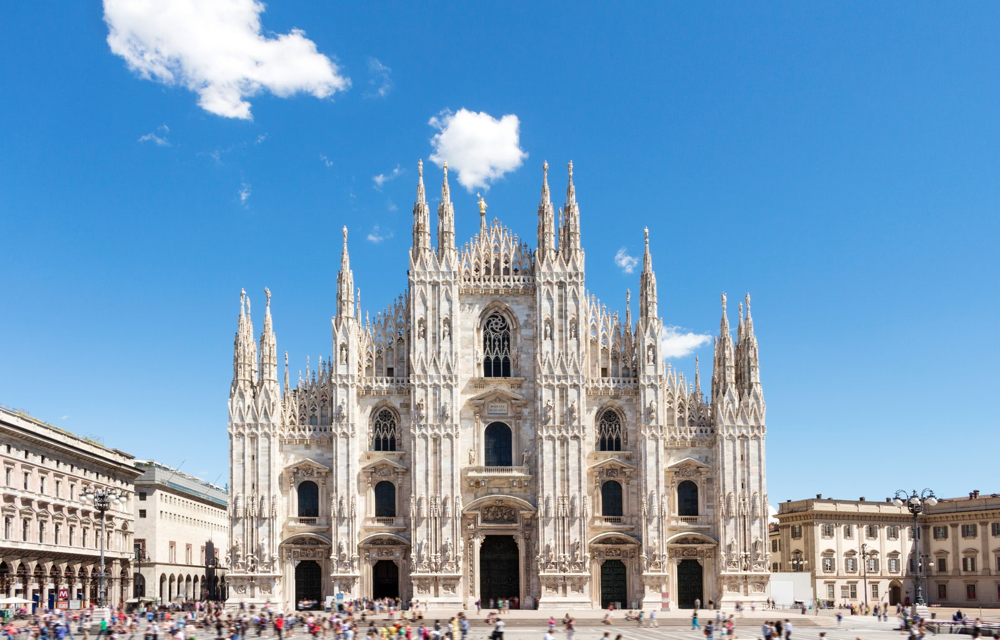
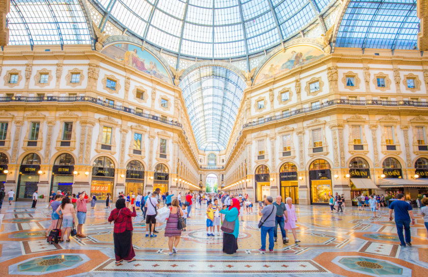
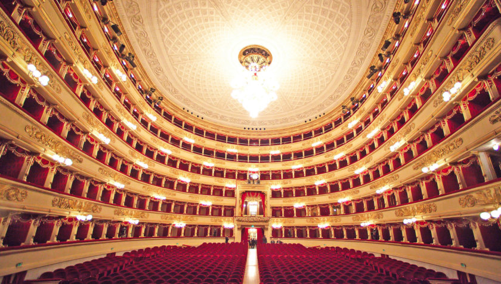
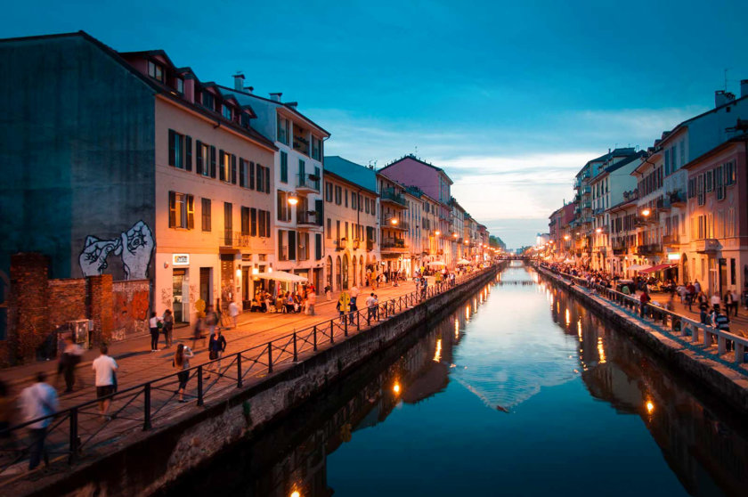

Mode, design et gastronomie règnent en maîtres dans cette ville italienne qui gagne à être connue
Il est très agréable de la visiter, puisque l’on peut facilement se rendre à pied jusqu’à ses nombreux lieux touristiques.
Une des capitales mondiales de la mode, Milan est souvent oubliée des touristes qui se dirigent en masse vers Rome,
Florence et Venise. Pourtant, la ville est un véritable joyau qui a beaucoup à offrir.

Le dome de Milan
Le symbole de la ville est situé sur la piazza del Duomo, qui constitue le centre historique et le point de départ idéal pour votre séjour à Milan.
Débutée en 1386, la construction du dôme de Milan a pris près de 500 ans. Il a été terminé sous l’ordre de Napoléon Bonaparte qui tenait absolument à y être consacré comme roi d’Italie.
Cette merveille d’architecture est la troisième plus grande cathédrale du monde, derrière la cathédrale Saint-Pierre de Rome et la cathédrale de Séville.

La gallerie Vittorio Emanuele II
En sortant de la cathédrale, sur la piazza del Duomo, continuez votre visite de Milan par la galerie Vittorio Emanuele II, un autre lieu à ne manquer
De style néo-classique à tendance baroque, avec ses magnifiques arcades et sa superbe coupole de verre et de fer, le lieu est très photogénique et lumineux.
Surnommée « Le salon de Milan », la galerie est considérée comme étant l’une des plus belles d’Europe et beaucoup de visiteurs l’intègrent à un circuit en Italie.

La Scala de MILAN
Partant de la piazza del Duomo, et suivant l’axe de la galerie Vittorio Emanuele, vous tomberez ensuite directement sur la piazza della Scala,
où, comme son nom l’indique, se trouve la Scala, le célèbre bâtiment abritant l’opéra de Milan
Avec le théâtre San Carlo de Naples et la Fenice de Venise, c’est l’une des 3 salles les plus prestigieuses et réputées d’Italie.
De très grandes œuvres de l’opéra italien y ont été crées comme notamment « Norma » de Vincenzo Bellini ou « Otello » de Verdi. Une des plus grandes cantatrices au monde, Maria Callas, s’y est même produite.

Le quartier des Navigli
Le quartier des Navigli, traversé par des canaux, est le plus pittoresque de Milan.
A l’origine, ce système de canaux permettait de relier le Po aux lacs de la région. Ils servaient au transport de marchandises et à l’approvisionnement en eau de Milan.
Le système de barrage et d’écluses utilisés à été inventé par Léonard de Vinci.
On vient aujourd’hui dans le quartier des Navigli pour se balader tranquillement le long des canaux et profiter d’un verre ou d’un repas sur l’une des terrasses de restaurants.
A voir en fin de journée avec la lumière du soleil couchant, c’est un quartier très romantique qui se transforme de le soir venu et est très animé avec ses nombreux bars.